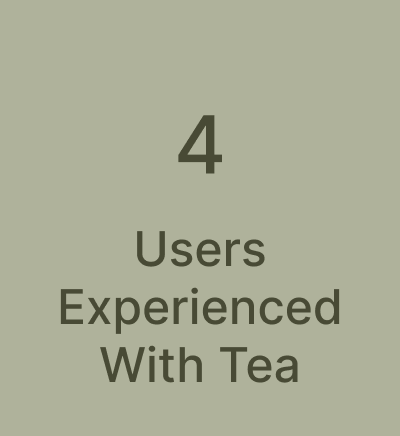

Mobile Design Project
Mobile Prototype
For this project, our team wanted to focus on onboarding a new user in a way that made them more knowledgeable in tea
My Role & Responsibilities
My Role & Responsibilities I mostly helped with aspects of user experience: - User testing - User scenario & journey - Competitor analysis
Goal
Design an app for new tea users
Timeline
We had 3 weeks to develop and code our app

What I Did
In this research project, I planned and conducted user interviews, as well as lo-fi and hi-fi user testing. I also mapped the user scenario and journey. All of these tasks were centered on how to introduce new tea users to the world of tea
The Process
 Cycle 1: 1st round of feature creation
Cycle 1: 1st round of feature creation
 Cycle 2: following rounds of feature creation (hi-fi and beyond)
Cycle 2: following rounds of feature creation (hi-fi and beyond)
User Research & Findings
In this round of research, we sought to find issues that both new and experienced tea drinkers had with the overall experience of drinking tea.
Key Takeaways:

Ideation Design
As we were interviewing, we made a list of possible features to implement
Our user flow specifically focuses on onboarding and walkthrough
Lo-fi Prototype
We wanted to educate the user before they went into the app so they felt eased into their tea journey, as opposed to feeling like they were thrown into the deep end.
Usability Testing & Research
In the first round of testing, we wanted to focus on making user interactions seamless
Key Takeaways:
Solutions:
Interactive Prototype